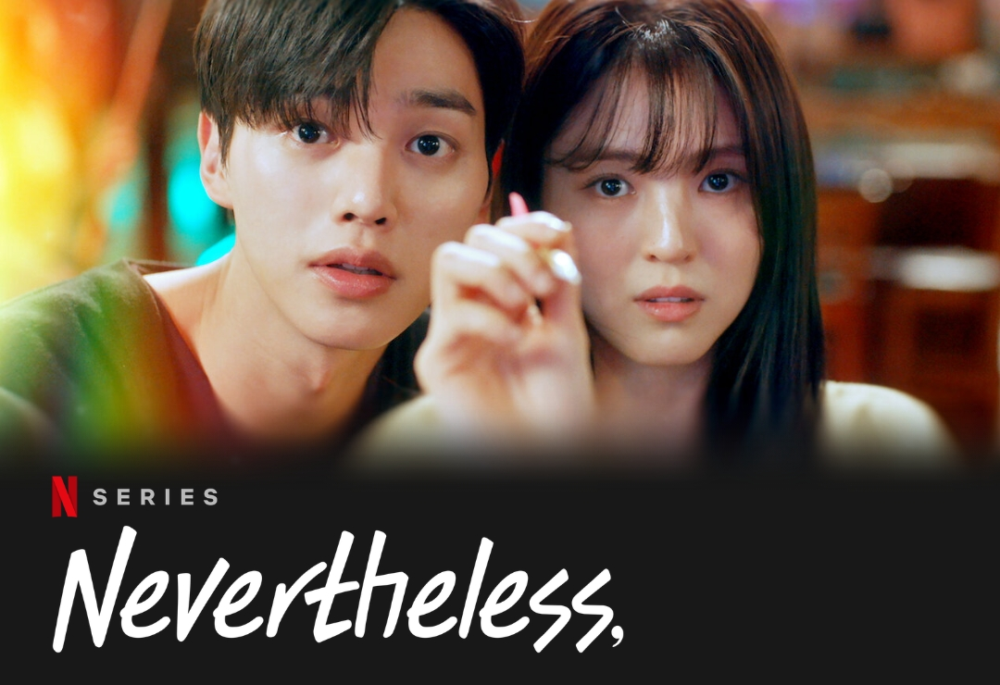

❤️❤️❤️❤️ My Fevorite Artist ❤️❤️❤️❤️
Billkin and PP
🬠series ğŸ¬
à¹à¸›à¸¥à¸£à¸±à¸à¸‰à¸±à¸™à¸”้วยใจเธภ("I Told Sunset About You")

Nevertheless
🧠Fevorite Music ğŸ§
ถ้าเราเจà¸à¸à¸±à¸™à¸à¸µà¸ (Until Then) - Tilly Birds
Give Me Your Forever - Zack Tabudlo ft. Billkin